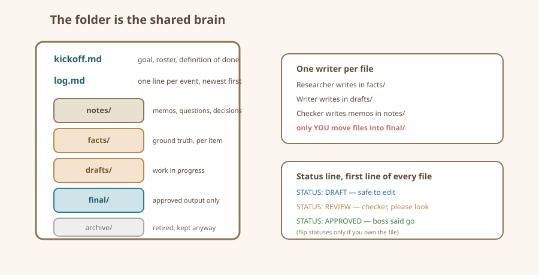

On this page: Everything the team knows lives in files - A starter floor plan - File naming: the three-part habit - One writer per file, in practice - Status markers inside files - The log: one line per event - The decision log (for anything worth an argument) - The floor plan, drawn - What NOT to store - Recap card
Shared-File Conventions
The folder is the office. Give it a floor plan.
Everything the team knows lives in files
Agents have no lasting memory between conversations. Your folder is the only shared brain. If an instruction, fact, or decision is not written down in the folder, it does not exist — no matter how sure you felt when you said it out loud.
So treat the folder like a real small-business filing system: boring, obvious, and impossible to misread. Boring is a feature.
A starter floor plan
Every project folder in this book uses the same layout:
project-folder/
kickoff.md <- the brief: goal, roster, definition of done
log.md <- one line per event, newest at the top
notes/ <- memos between agents (handoffs live here)
facts/ <- raw research, one file per item
drafts/ <- work in progress, one file per deliverable
final/ <- approved outputs only
archive/ <- anything superseded, don't delete, don't read againSeven names, memorized in one read. Two rules glue it together: facts only in facts/, finished only in final/. Most "the team is confused" moments happen because a draft wandered into the wrong room and someone cited it.
File naming: the three-part habit
Name every working file who-what-when — or at minimum keep these three habits:
- Date first, in a sorting order that works:
2026-03-01sorts correctly everywhere, unlikeMarch 1stor0301. - One thing per file:
pedal-02-facts.md, neverresearch-stuff.md. When a file needs "stuff" in the name, it needs to be three files. - Status in the name when it matters:
pedal-02-listing-DRAFT.mdvspedal-02-listing-FINAL.md— when the wrong copy being picked up would be costly, put the status right there rather than inside the file.
Keep names lowercase, use dashes not spaces, and never retype a name — copy the last one and edit it, so versions stay beside their relatives.
One writer per file, in practice
The rule from the roles chapter becomes mechanical here:
- The Researcher edits files in
facts/. - The Writer edits files in
drafts/. - The Checker writes memos in
notes/— bounces a review, never edits a draft directly. - You (and only you) edit
kickoff.mdand move files intofinal/.
Nobody "helpfully tidies" someone else's room. If the Writer thinks a fact sheet is wrong, the Writer writes a note in notes/questions-to-researcher.md; the Researcher answers there. This slightly slower loop is what keeps the team from arguing with itself in the same file.
Status markers inside files
Open a shared file and its first line should be honest:
STATUS: DRAFT — writer, safe to editSTATUS: REVIEW — checker, please lookSTATUS: APPROVED — boss approved, move to final/STATUS: QUESTION — parked, see note at the bottom
When an agent finishes, it flips the status. When you approve, you flip it again. It sounds silly-simple and it works, because it gives every conversation — even a fresh one with zero memory — an instant answer to "what's the story with this file?"
The log: one line per event
log.md is a team diary where each event is a single dated line, newest first:
2026-03-01 14:20 BOSS kickoff approved, team started
2026-03-01 14:35 RESEARCHER fact sheets 1,2,4 done; 3,5 need source check
2026-03-01 14:41 WRITER left question about pedal-03 weight in notes/
2026-03-01 14:50 CHECKER bounced pedal-02 list: claims weight "450g", facts say "unstated"Why a log? Because when something smells wrong later, the log is the X-ray. You can see who wrote what when, with almost zero effort. Tell each agent: append one line here whenever you finish a task. Agents are excellent at this discipline; you will be grateful you had them do it.
The decision log (for anything worth an argument)
Bigger or riskier calls (price changes, policies, anything involving money or other people) get a second, shorter file: notes/decisions.md, with one entry per decision:
- Date and boss: 2026-03-01, BOSS.
- Decision: reserve pedals at $89, not $79.
- Because: comps averaged $92, three sat unsold at $79 on a rival shelf.
You never need to re-litigate an old choice or remember why; agents that read the file stop re-suggesting the abandoned idea every conversation.
The floor plan, drawn

What NOT to store
- Passwords, account numbers, real IDs, or patient details — nowhere, ever.
- Your clients' or family members' personal data — use initials or fictional stand-ins while learning.
- Anything you would not hand to a stranger holding a photo of it — one day you might publish this folder as a template; keep it publishable from day one.
Recap card
- Folder = shared brain; if it isn't in the folder, it isn't real.
- Standard rooms: kickoff, log, notes, facts, drafts, final, archive.
- Name files
date-thing-status; one thing per file. - One writer per file; everyone else leaves notes.
- Flip status lines; keep a one-line-per-event log; log decisions that matter.